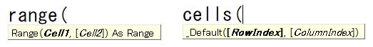

第11回.RangeとCellsの使い方

VBAではセルを指定する方法としてRangeとCellsがあります、
どう使い分けたらよいのでしょうか、
RangeとCellsの使い方・使い分け方について解説をします。
RangeとCellsの基本的な使い分け方
Rangeを使うのは
・セル範囲（複数セル）の場合
・名前定義を使う時
単一セル（1つの）セルの指定で変数を使う場合は、Cellsを使うようにします。
Cellsを使うのは
固定セル（固定位置）の指定
Range("A1:C5")
Range("1:5")
Range("A:C")
Range("名前定義の名前")
この名前定義を使う場合は、Rangeでしか指定できません。
Rangeに変数は使わないようにします
iは変数で、数値が入っている訳ですが、
（変数については、次回に説明します。）
使ってはダメだという事でもないのですが、あまり良い書き方ではありません。
つまり、このような記述をする特段の理由が見当たらないという事になります。
Cellsがあるのですから、基本的にはこれを使うようにしましょう。
Rangeに変数を使う場面として、これならありかなという場面としては
変数の、lastRowに最後の行数が入っているとして、その範囲に何か設定するような場合。
Range(Cells(2, 1), Cells(lastRow, 1)) = ""
Range(Cells(2, 3), Cells(lastRow, 3)) = ""
Range("A1:A" & lastRow) = ""
Range("C1:C" & lastRow) = ""
特に、後々に出てきますがRangeやCellsにシート指定をするようになると、
Rangeで書くほうが記述がかなり短く済むので使っても良いと思います。
ただしこの場合でも、実はResizeプロパティを覚えると、もっと簡単に記述することができるようになります。
１つの（VBAで位置を変化させる）セルを指定する場合
列は、数字だけでなく、列記号も使えます。
Cells(5, "C")
Cells(i, 3)
Cells(i, j)
このように書きます。
セル範囲（複数セル）を指定する場合
この、始点セルと終点セルに、Cellsを指定します。
Range(Cells(行, 列), Cells(行, 列))
このように書きます。
A1セルからA5セルなら
Range(Cells(1, 1), Cells(5, 1))
A1セルからC1セルなら
Range(Cells(1, 1), Cells(1, 3))
A1セルからC5セルなら
Range(Cells(1, 1), Cells(5, 3))
このようになります。
Range(Cells(1, 1), Cells(i, 1))
Range(Cells(1, 1), Cells(1, i))
このように書きます。
複数行全体、複数列全体の指定
Range(Rows(1), Rows(5))
Range(Columns(1), Columns(3))
このように指定します。
Range(Rows(1), Rows(i))
Range(Columns(1), Columns(i))
このように書きます。
RangeとCellsの使い分け方のまとめ
セル範囲と名前定義の場合はRangeを使う、それ以外はCellsを使う。
これが基本になります。
変数を使う時はCells、Rows、Columnsを使用すると言う事です。
RangeとCellsの基本の関連記事
これから多くのRange、Cellsに関することを説明していきますので順に学んで行ってください。
第31回.セルの書式（表示形式,NumberFormatLocal）
第39回.セルのクリア（Clear）
第82回.Rangeのプロパティ（Resize）
RangeとCellsの応用の関連記事
RangeやCellsの書き方次第で、マクロVBAの見た目が大きく変わってきます。
処理結果が同じであるなら、読みやすいVBAコードを書くようにしましょう。
同じテーマ「マクロVBA入門」の記事
第8回.セルに文字を入れるとは（Range,Value）
第9回.Rangeでのセルの指定方法
第10回.Range以外の指定方法（Cells,Rows,Columns）
第11回.RangeとCellsの使い方
第38回.セルに計算式を設定（Formula）
第12回.変数宣言のDimとデータ型
第13回.定数宣言のConstと型宣言文字
第14回.文字の結合（&アンパサンド）と継続行（_アンダーバー）
第15回.四則演算と注釈（コメント）
第16回.繰り返し処理（For Next)
第17回.繰り返し処理（Do Loop）
新着記事NEW ・・・新着記事一覧を見る
VBA100本ノック 100本目：WEBから100本ノックのリストを取得｜VBA練習問題（3月3日）
VBA100本ノック 99本目：自動席替え（行列と前後左右が全て違うように）｜VBA練習問題（3月2日）
VBA100本ノック 98本目：席替えルールが守られているか確認｜VBA練習問題（3月1日）
VBA100本ノック 97本目：Accessデータを取得（グループ集計）｜VBA練習問題（2月27日）
VBA100本ノック 96本目：Accessデータを取得（マスタ結合&抽出）｜VBA練習問題（2月26日）
VBA100本ノック 95本目：図形のテキストを検索するフォーム作成｜VBA練習問題（2月24日）
VBA100本ノック 94本目：表範囲からHTMLのtableタグを作成｜VBA練習問題（2月23日）
VBA100本ノック 93本目：複数ブックを連結して再分割｜VBA練習問題（2月22日）
VBA100本ノック 92本目：セルの色を16進で返す関数｜VBA練習問題（2月20日）
VBA100本ノック 91本目：時間計算（残業時間の月間合計）｜VBA練習問題（2月19日）
アクセスランキング ・・・ ランキング一覧を見る
1.最終行の取得（End,Rows.Count）｜VBA入門
2.RangeとCellsの使い方｜VBA入門
3.変数宣言のDimとデータ型｜VBA入門
4.マクロって何？VBAって何？｜VBA入門
5.Range以外の指定方法（Cells,Rows,Columns）｜VBA入門
6.セルのコピー&値の貼り付け（PasteSpecial）｜VBA入門
7.繰り返し処理（For Next)｜VBA入門
8.セルに文字を入れるとは（Range,Value）｜VBA入門
9.マクロはどこに書くの（VBEの起動）｜VBA入門
10.とにかく書いてみよう（Sub,End Sub）｜VBA入門
このサイトがお役に立ちましたら「シェア」「Bookmark」をお願いいたします。
記述には細心の注意をしたつもりですが、
間違いやご指摘がありましたら、「お問い合わせ」からお知らせいただけると幸いです。
掲載のVBAコードは動作を保証するものではなく、あくまでVBA学習のサンプルとして掲載しています。
掲載のVBAコードは自己責任でご使用ください。万一データ破損等の損害が発生しても責任は負いません。